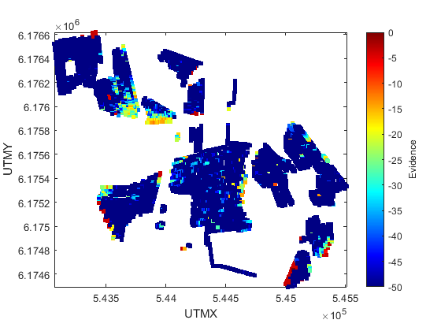
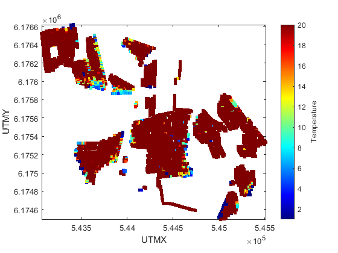
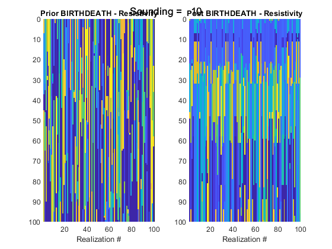
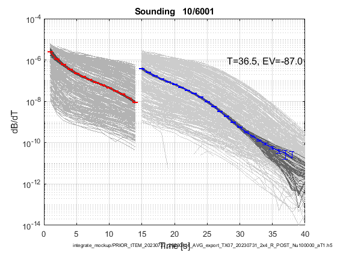
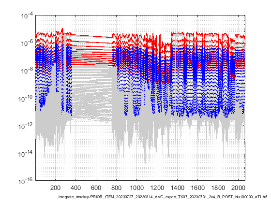
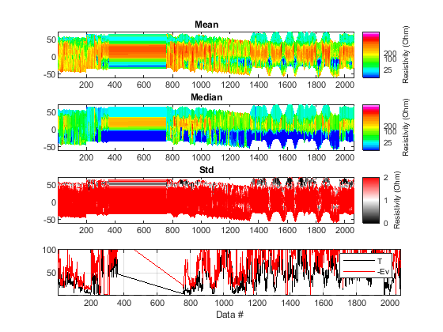
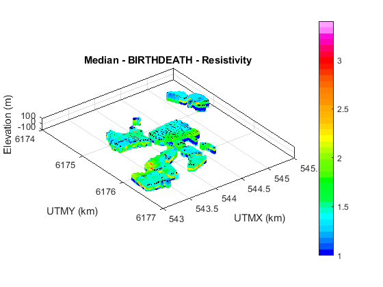

Plotting posterior statistics
[1]:
% Some Paths
if ~exist('sippi_prior','file');
addpath ../sippi
addpath ../mgstat
addpath ../sippi_abc
sippi_set_path
end
addpath matlab
[2]:
% Some choices
% Set the HDF5 file with posterior information
f_post_h5 = 'integrate_mockup/PRIOR_tTEM_20230727_20230814_AVG_export_TX07_20230731_2x4_R_POST_Nu100000_aT1.h5'
h5ls(f_post_h5)
% Next step may not be necessary as it is most always done as part of inversion.
integrate_posterior_stats(f_post_h5)
h5ls(f_post_h5)
[2]:
f_post_h5 = 'integrate_mockup/PRIOR_tTEM_20230727_20230814_AVG_export_TX07_20230731_2x4_R_POST_Nu100000_aT1.h5'
/ - 3 datasets
DATA 01/03: EV [1 6001 ]
DATA 02/03: T [1 6001 ]
DATA 03/03: i_use [400 6001 ]
GROUP 03/01: /M1
/M1 - 3 datasets
DATA 01/03: Mean [101 6001 ]
DATA 02/03: Median [101 6001 ]
DATA 03/03: Std [101 6001 ]
integrate_posterior_stats: post stat for /M1, is_discrete=0
/M1 +-------------------------------------------- 3.3 200/6001
/M1 ++------------------------------------------- 6.7 400/6001
/M1 ++++----------------------------------------- 10.0 600/6001
/M1 +++++---------------------------------------- 13.3 800/6001
/M1 +++++++-------------------------------------- 16.7 1000/6001
/M1 ++++++++------------------------------------- 20.0 1200/6001
/M1 ++++++++++----------------------------------- 23.3 1400/6001
/M1 +++++++++++---------------------------------- 26.7 1600/6001
/M1 +++++++++++++-------------------------------- 30.0 1800/6001
/M1 ++++++++++++++------------------------------- 33.3 2000/6001
/M1 ++++++++++++++++----------------------------- 36.7 2200/6001
/M1 +++++++++++++++++---------------------------- 40.0 2400/6001
/M1 +++++++++++++++++++-------------------------- 43.3 2600/6001
/M1 ++++++++++++++++++++------------------------- 46.7 2800/6001
/M1 ++++++++++++++++++++++----------------------- 50.0 3000/6001
/M1 +++++++++++++++++++++++---------------------- 53.3 3200/6001
/M1 +++++++++++++++++++++++++-------------------- 56.7 3400/6001
/M1 ++++++++++++++++++++++++++------------------- 60.0 3600/6001
/M1 ++++++++++++++++++++++++++++----------------- 63.3 3800/6001
/M1 +++++++++++++++++++++++++++++---------------- 66.7 4000/6001
/M1 +++++++++++++++++++++++++++++++-------------- 70.0 4200/6001
/M1 ++++++++++++++++++++++++++++++++------------- 73.3 4400/6001
/M1 ++++++++++++++++++++++++++++++++++----------- 76.7 4600/6001
/M1 +++++++++++++++++++++++++++++++++++---------- 80.0 4800/6001
/M1 +++++++++++++++++++++++++++++++++++++-------- 83.3 5000/6001
/M1 ++++++++++++++++++++++++++++++++++++++------- 86.7 5200/6001
/M1 ++++++++++++++++++++++++++++++++++++++++----- 90.0 5400/6001
/M1 +++++++++++++++++++++++++++++++++++++++++---- 93.3 5600/6001
/M1 +++++++++++++++++++++++++++++++++++++++++++-- 96.7 5800/6001
/M1 ++++++++++++++++++++++++++++++++++++++++++++- 100.0 6000/6001
integrate_posterior_stats: done
/ - 3 datasets
DATA 01/03: EV [1 6001 ]
DATA 02/03: T [1 6001 ]
DATA 03/03: i_use [400 6001 ]
GROUP 03/01: /M1
/M1 - 3 datasets
DATA 01/03: Mean [101 6001 ]
DATA 02/03: Median [101 6001 ]
DATA 03/03: Std [101 6001 ]
[3]:
## Plot some figures
Invalid text character. Check for unsupported symbol, invisible character, or pasting of non-ASCII characters.
Temperarture and Evidence
[4]:
integrate_plot_T_EV(f_post_h5)
integrate_get_geometry: Reading geometry from tTEM_20230727_20230814_AVG_export.h5
[4]:

[4]:

1D Posterior plot
[5]:
% plot single sounding (number 10)
figure
is=10;
integrate_plot_sounding_model(f_post_h5,is)
% plot data from sounding
figure
integrate_plot_sounding(f_post_h5,is)
[5]:

M1
[5]:

Warning: Negative data ignored
2D Posterior plots
2D Posterior data
[6]:
% Select soundings to plot
[X,Y,ELE,LINE]=integrate_get_geometry(f_data_h5);
use_line = 500;
iplot=find( (LINE<use_line) );
% Plot many data responses
figure
integrate_plot_sounding(f_post_h5,iplot)
integrate_get_geometry: Reading geometry from tTEM_20230727_20230814_AVG_export.h5
[6]:

Warning: Negative data ignored
2D Profile
[7]:
iplot=find( (LINE>=1900) & (LINE<=1930) );
iplot=find( (LINE<500));
integrate_plot_profile(f_post_h5,iplot);
[7]:

integrate_plot_profile_continuous: Plotting profile of /M1
integrate_get_geometry: Reading geometry from tTEM_20230727_20230814_AVG_export.h5
3D Posterior plots
[9]:
iplot=find( LINE<=1500 );
figure
integrate_plot_3d_posterior(f_post_h5,'M1','Median',iplot,'doHardcopy',1)
if h5data_exist(f_prior_h5,'/M2')
figure
integrate_plot_3d_posterior(f_post_h5,'M2','Mode',iplot)
end
if h5data_exist(f_prior_h5,'/M3')
figure
integrate_plot_3d_posterior(f_post_h5,'M3','Mode',iplot)
end
[9]:

integrate_plot_3d_posterior: Plotting profile of /M1
integrate_get_geometry: Reading geometry from tTEM_20230727_20230814_AVG_export.h5
[ ]: